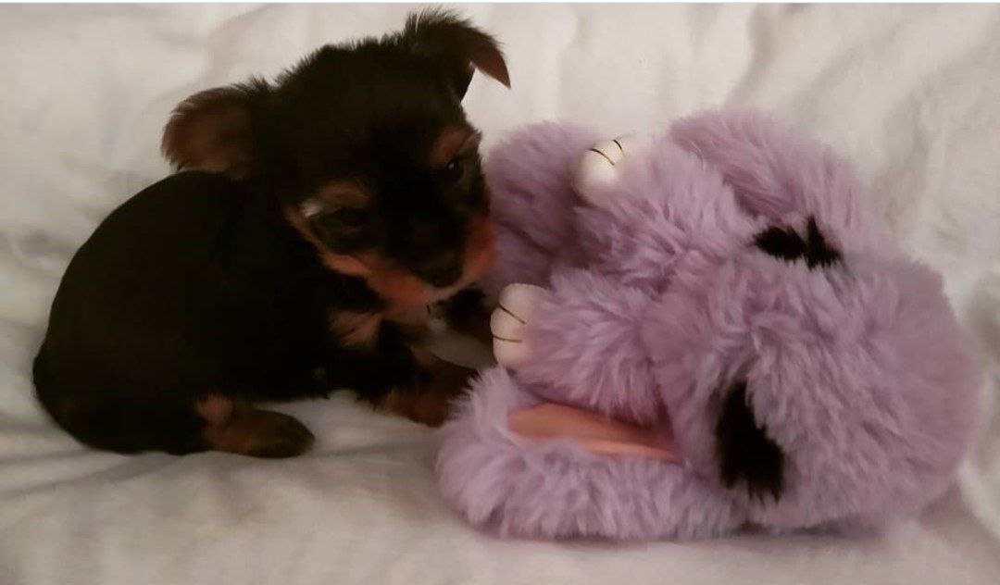
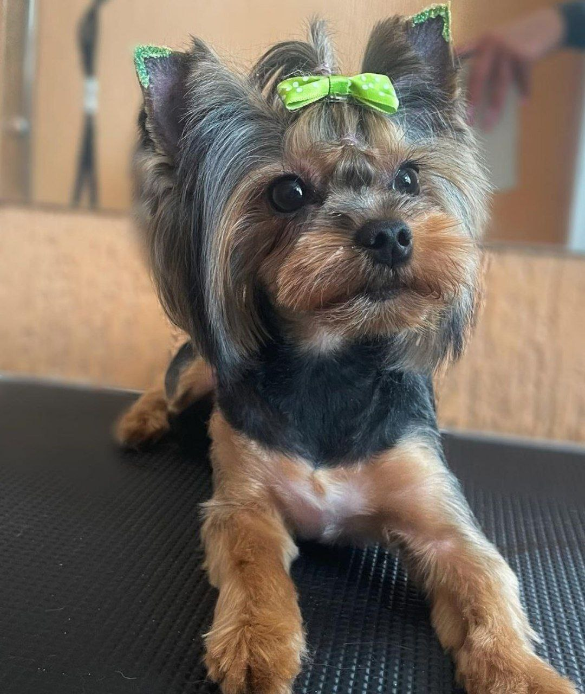

Приветствую всех!
Расскажу о своей собаке.
У меня есть домашний питомец – собака по кличке Элис . Она принадлежит к породе йоркшерский терьер мини, и весит всего лишь 2 кг. Элис – любимица всей семьи. У нее шелковистая шерстка светлого и темного цвета,очень выразительные глаза. Элис – большая умница, и все понимает, когда к ней обращаешься. Она очень нежная, любит чтобы ее гладили, называли ласковыми словами. Больше всех Элис любит мою дочку, и только ее считает своей хозяйкой. Для меня же Элис – как второй ребенок, веселый и озорной. Я очень люблю свою собаку.
Когда ей исполнился месяц, мы поехали ее забирать в другой город, дорога была долгой, но вся наша семья ждала с нетерпением появления этой красавицы у нас.Дорога домой была наполена впечатлением и вопросами: "Справимся ли мы?" ведь Элис такая малышка. Для дочки первая встреча была сюрпризом.

Так выглядит взрослый йоркшерский терьер
"Любимые игры"
- «Апорт»
- «Перетягивание»
- «Догонялки»

Месяц нашей Элис
"Любимые лакомства"

Сейчас она такая
{kind=link}